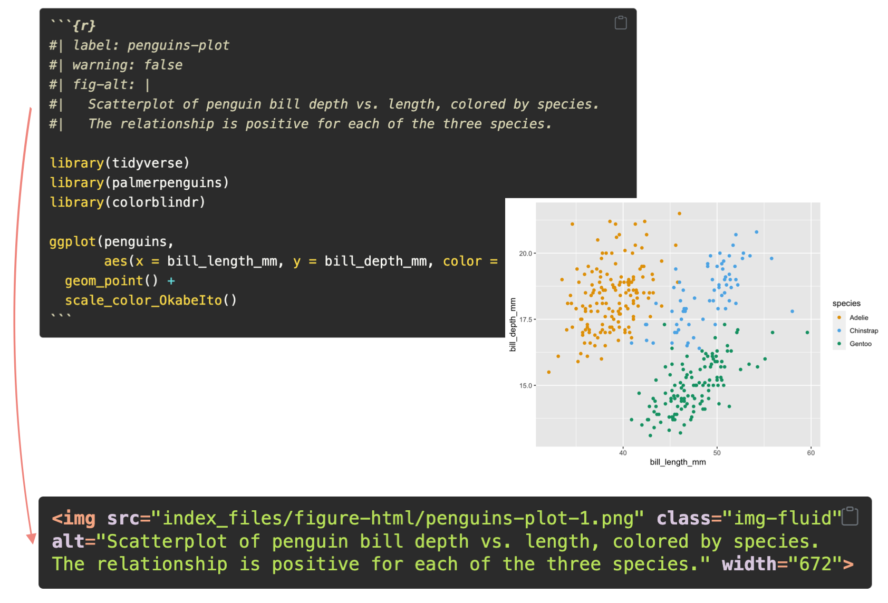
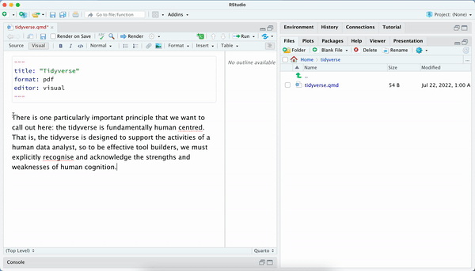

a11y

fig-alt
slide-tone
image-alt
image
aria-label
icon

[[]{.quarto-sho…
[]
{}
resources
_quarto.yml
chalkboard: true
revealjs
.qmd
posts
output-loc…
include
freeze
echo: fenced
layout-ncol
layout-ncol: 2


![Screenshot of the FAQ for R Markdown users page. with the description 'Answers to R Markdown users' most frequently asked questions about Quarto.' The questions answered are: What can I use Quarto for?, Quarto sounds similar to R Markdown. What is the difference and why create a new project?, Is R Markdown going away? Will my R Markdown documents continue to work?, Should I switch from R Markdown to Quarto?, I use X (bookdown, blogdown, etc.). What is the Quarto equivalent?, Can you create custom formats for Quarto like you can for R Markdown?, When would be a good time to start new projects in Quarto rather than R Markdown?, Does the RStudio IDE support Quarto?, Does RStudio Connect support Quarto?](./posts/08-rmd-switch/featured.png)